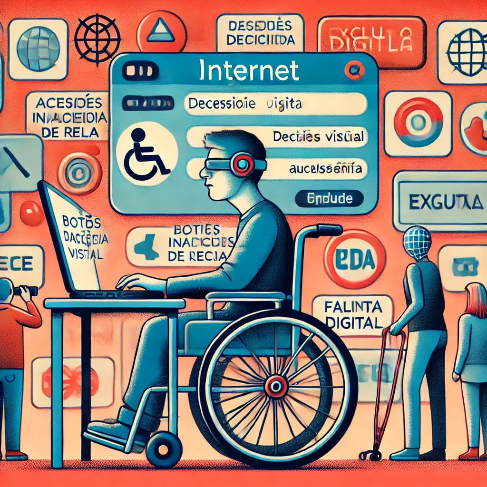
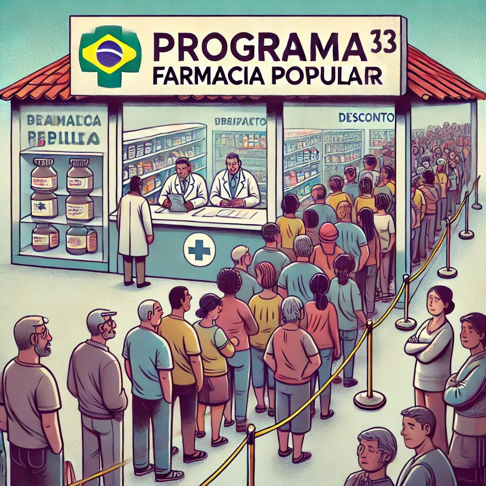
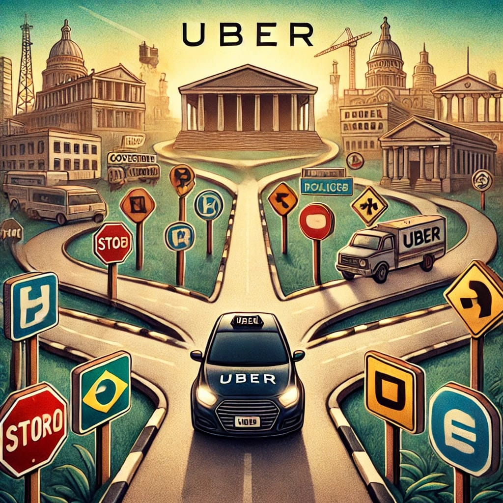

Lei Brasileira de Inclusão da Pessoa com Deficiência (LBI) foi considerada um grande avanço em relação aos direitos da pessoa com deficiência. Ela é destinada a "assegurar a promoção de condições de igualdade".

O Governo Federal Brasileiro possui algumas iniciativas para auxiliar a população no acesso ao tratamento médico e uma delas é a Farmácia Popular.

O Projeto de Lei 1471/22 determina que a regulamentação dos serviços de aplicativo de transporte de passageiros, como Uber e 99, deverá prever um valor mínimo a ser repassado ao motorista, superior ao valor horário do salário mínimo vigente. O texto tramita na Câmara dos Deputados.
Vigorexia: entenda transtorno que causa busca incessante por massa muscular. Especialistas explicam sobre problema que pode prejudicar saúde mental e física
Art. 9º É assegurado o direito de greve, competindo aos trabalhadores decidir sobre a oportunidade de exercê-lo e sobre os interesses que devam por meio dele defender.